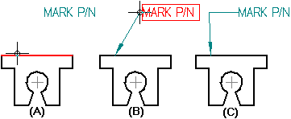

Add a leader
-
Choose the Leader command .
-
On the Leader command bar, click the Break Line Type option, and then select the orientation you want to use:
-
Horizontal
-
Vertical
-
None
-
-
Click an element or in free space to place the terminator end of the leader (A).
-
Move the cursor around until the leader and the break line are oriented as needed.
You can further adjust the incline of the break line segment of the leader by typing a value, in degrees, in the Angle box on the command bar.
-
Click an element or in free space to place the annotation end of the leader (B). The leader is placed (C).

-
To place a model PMI annotation that references multiple elements instead of a single element, click Referenced Geometry on the command bar. To learn how to use this option, see Select multiple reference elements.
-
You can snap any segment of a multi-segment leader line so that it is perpendicular to the previous or next segment. This does not apply to the break line.
-
After you place a leader, you can use the Properties command to change the terminator type to an anchor.
-
You can insert a vertex in a leader using the Alt key.